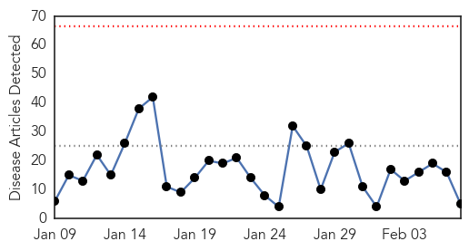
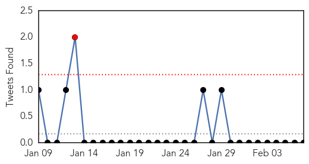
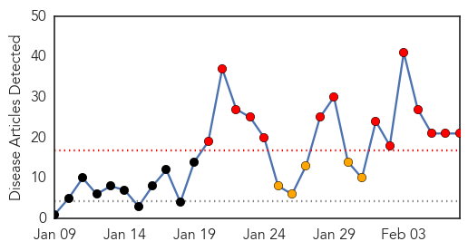

Influenza
30-Day Web Trend
0 alerts, 0 warnings

30-Day Twitter Trend
1 alerts, 0 warnings

Article Locations

Article Confidences

Top Articles:
Top Tweets:
-
No tweets found for Feb 07, 2015
Swine Flu
30-Day Web Trend
14 alerts, 5 warnings

30-Day Twitter Trend
0 alerts, 0 warnings

Article Locations

Article Confidences

Top Articles:
- 0.999
- Swine flu in India: India prepares to tackle another epidemic
- 0.999
- Swine flu: MP government to procure 30K Tamiflu, protective kits
- 0.998
- Swine flu in India: Virus continues to create havoc across Telangana
- 0.998
- Swine flu patient dies in CMCH
- 0.998
- Five new cases of swine flu, total 36
- 0.997
- Year-old girl tests H1N1 positive
- 0.997
- 5 new swine flu patients in Mumbai hospitals
- 0.997
- Swine flu scare in Kanpur
- 0.996
- Swine Flu Claims Two More Lives in Telangana as Toll Rises to 41
- 0.996
- Swine flu: Special team from Delhi to reach Jaipur soon
- 0.996
- Five more succumb to swine flu in Gujarat; death toll reaches 71
- 0.994
- Mumbai: 4 H1N1 patients in critical condition
- 0.992
- Rajasthan in emergency mode
- 0.988
- No Swine Flu death in Chhattisgarh, says govt.
- 0.980
- Mysuru reports two suspected H1N1 cases
- 0.969
- Four more succumb to swine flu in Gujarat
- 0.946
- H1N1: Health Department asked to take up awareness drive
- 0.931
- State to ban retail sale of Tamiflu
- 0.891
- District health officials gear up to tackle H1N1
- 0.746
- Health official calls for referral system
- 0.627
- Swine Flu Outbreak: Centre Promises Help To States
Top Tweets:
-
No tweets found for Feb 07, 2015